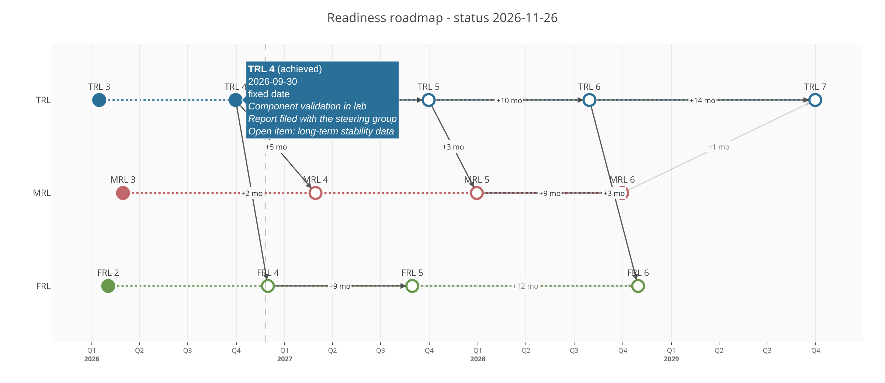
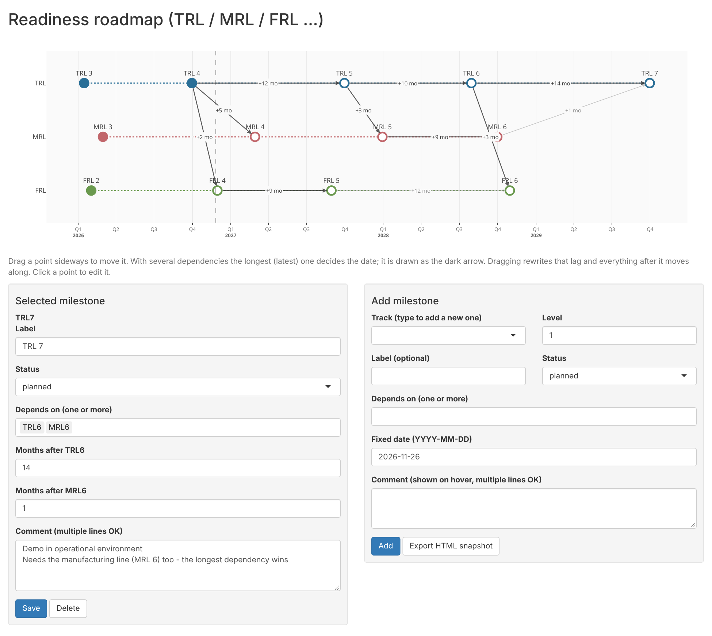

Simple tool for start-ups to first define a roadmap in their terms by setting readiness levels.
- Milestones live inside a plain .csv-file.
- A milestone is either a fixed date or x months after one or more other milestones.
- Longest milestone is displayed.
- Interactive timeline with quarterly ticks and multiline hover comments to highlight information.
- A shiny app to drag milestones, edit, comment and add tracks.
- It is possible to make a standalone, hover-only HTML snapshot of the current status.
Installation
# install.packages("remotes")
remotes::install_github("VJGeiger/roadmappeR")Usage
library(roadmappeR)
# start with a copy of the example data
file.copy(roadmap_example(), "milestones.csv")
run_roadmap("milestones.csv") # interactive
export_snapshot("milestones.csv", "snapshot.html") # standalone HTML
# or work in code
ms <- read_milestones("milestones.csv")
plot_roadmap(ms)See ?"milestones-format" for the csv columns.
Example
plot_roadmap() on the example data: one lane per readiness track, dependencies as arrows (the dark arrow is the longest one), and a multiline comment on hover.

run_roadmap() opens the same plot in the app: drag a point to move it, click a point to edit its dependencies and comment, or add milestones and tracks.
